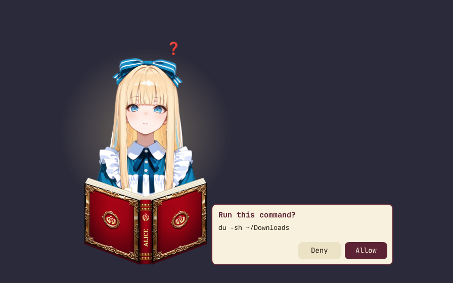
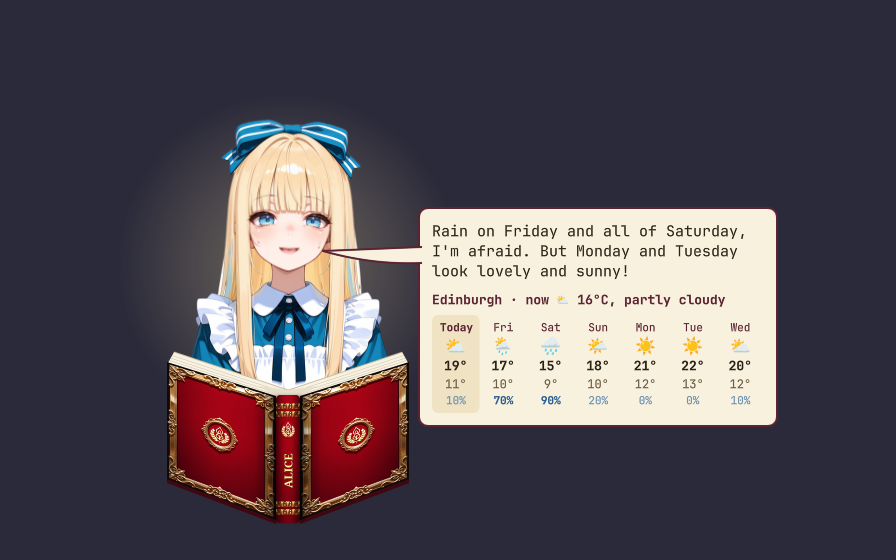
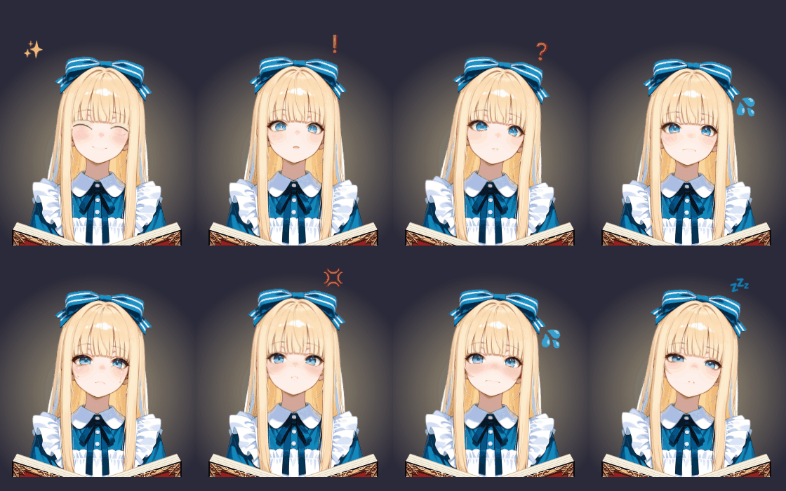
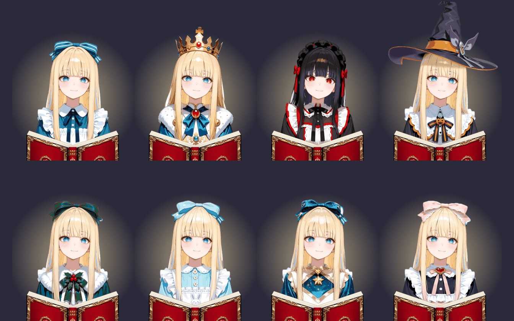
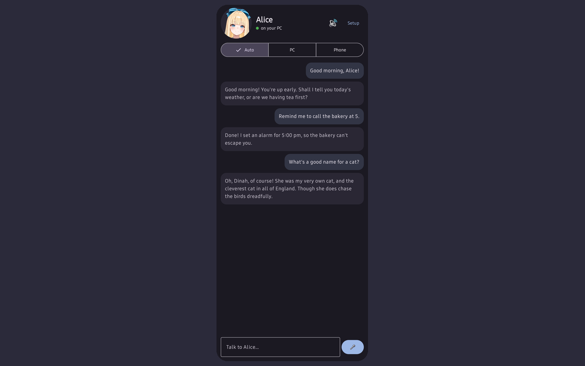

Your desktop, with a little Wonderland in it.
Alice lives in a storybook on your screen. Call her, and the book opens: she listens, talks back in her own voice, looks things up and does things on your computer, and she asks before she changes anything.
media/hero.webm).How she works
Alice stays out of the way until you want her.
A book on your screen
Closed, she is a slim spine at the edge of your desktop. Drag her anywhere, or lay the book on its side.
Open it and ask
Click the book or press a key, then type or just talk. Spoken questions get spoken answers, with lip sync and a face for her mood.
She asks before acting
Anything that changes your computer shows a card with the real command, and waits for your Allow. Closing the book counts as Deny.
What she can do
A few highlights. The full list is in the documentation.
Talks and listens
Chat by typing or by voice, in English, with Portuguese understood. Her voice and speech recognition run locally.
Acts on your desktop
Opens apps, runs commands, finds files, manages windows, notes, alarms and the clipboard, and looks at your screen when you ask.
Looks things up
Web search with sources, weather, news, exchange rates, films and series without spoilers, and Steam prices, sales and reviews.
Plays music
Plays from your Jellyfin server: playlists, favourites, a queue and mixes of similar songs, and pauses while she talks.
Remembers you
Keeps the preferences you ask her to remember, greets you on holidays and birthdays, and gives a morning summary.
Has a wardrobe
Holiday outfits, a proud Queen Alice and a sarcastic Evil Alice, each with her own way of speaking.
Comes on your phone
An Android app talks to her over Tailscale, with a small on-phone model when the PC is out of reach.
Private by default
The model runs through Ollama on your machine. Notes and memories are plain files on your disk.
See her in action





Get Alice
You need Linux with the niri compositor and PipeWire. The tested setup has a GPU with about 16 GB of video memory; with less, use a smaller model.
On Arch Linux, install what she needs, then clone and run the installer:
sudo pacman -S quickshell uv ollama pipewire grim libnotify glib2 curl
sudo systemctl enable --now ollama
git clone
cd alice-assistant
./install.shThe installer sets up her backend, downloads her voice and model, and prints the keybinds to add to your niri config. The install guide has the details.
Made with AI
Alice was developed with the help of AI coding assistants. The code is reviewed and tested on a real desktop, but expect rough edges, and read what an action will do before you approve it.